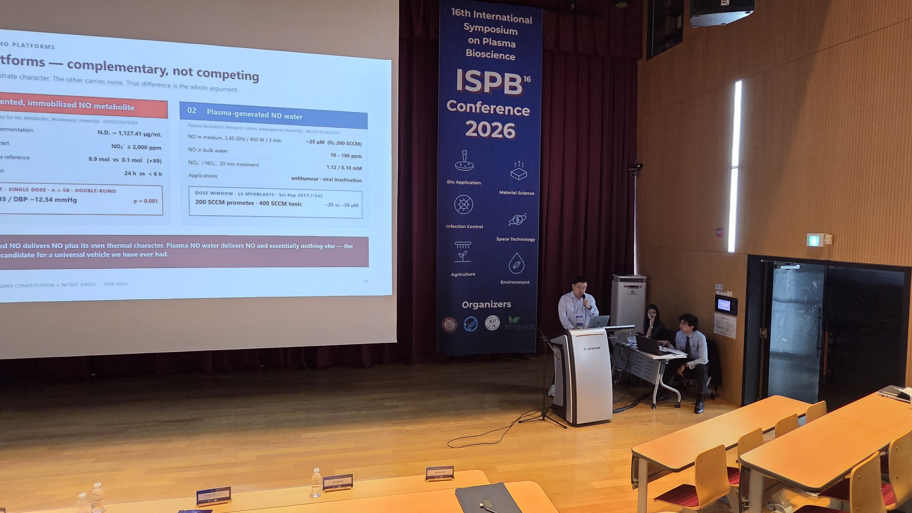
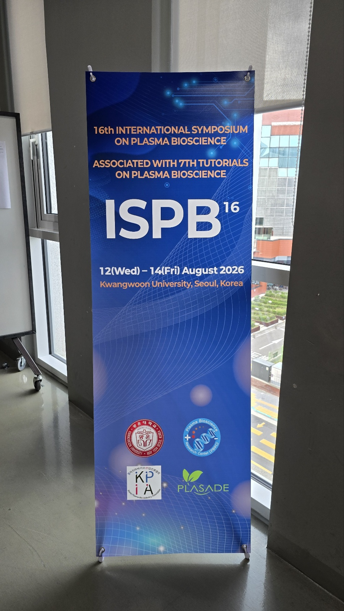

SCIENCE · DATA · BOUNDARIES
임동구·유정근의 연구와 외부자료 사상체질 설문·식품선호·질환 경향 연구와 체질건강·아로마 콘텐츠를 한 축에 놓고, 유전체·마이크로바이옴·산화질소·AI의 외부 근거를 다음 연구 질문으로 연결합니다.
PRIMARY AUTHOR EVIDENCE
대표 논문 소개
유정근의 사상체질 설문 개발 연구와 임동구 박사의 체질별 BMI·식품선호도 연구
유정근 · 2022 국제학술지
Machine Learning Applications for the Development of a Questionnaire to Identify Sasang Constitution Typology
김순미·유정근·박은혜가 체질 설문 데이터에 문항선별, 계층적 군집, 다중대응분석을 적용해 47개 핵심 문항과 6개 군집을 탐색했습니다. 설문 구조와 신뢰도를 개선하기 위한 연구이며, 개인 체질을 자동 확정하는 진단 모델로 해석하지 않습니다.
PubMed 원문
로컬 근거 KB-01661
Kim · Ryu · Park · IJERPH 19(18), 11820 · DOI 10.3390/ijerph191811820
임동구 · 2018 피어리뷰 논문
SCAT2와 전문가에 의해 분류된 사상체질별 BMI 및 식품선호도 분석
천진솔·임동구·김순미가 SCAT2와 전문가 분류를 비교하고 체질별 BMI와 식품선호를 분석했습니다. 분류 방법의 일치도와 식품선호의 집단 경향을 함께 다루며, 결과를 개인의 체질 판정이나 식품 처방으로 곧바로 확대하지 않습니다.
DOI 원문
KCI 서지
Cheon · Yim · Kim · 한국식생활문화학회지 33(2), 186–198 · DOI 10.7318/KJFC.2018.33.2.186
AUTHOR · CONTENT · PRESENTATION
공동연구와 직접 작성·발표 콘텐츠
2025년 질환 유병률 문헌분석은 선행연구에 나타난 체질별 질환 경향을 비교해 향후 검증할 연구 질문을 정리합니다. 2021년 41종 꽃차 연구는 여러 판정 방식과 꽃차 반응 자료를 비교해 체질별 적합 가능성을 탐색했습니다. 두 연구 모두 집단 수준의 경향과 탐색 결과를 다루므로 개인의 질병 예측이나 치료·섭취 처방으로 사용하지 않습니다.
2025 학술발표·원고 사상체질에 따른 주요 질환 유병률 문헌분석 임동구·유정근·이종헌이 기존 문헌의 체질별 질환 경향을 정리한 연구입니다. 집단 수준의 경향을 개인의 질병 예측으로 확대하지 않습니다.
연구원고 KB-03455 → 발표 포스터 KB-03460 → 2021 연구 원고 41종 꽃차의 사상체질별 적합도 탐색 임동구 외 연구진이 O-ring·펜듈럼·전문가 판정 자료를 비교한 원고입니다. 탐색적 방법의 재현성과 맹검·표본 설계가 보강되어야 하며 치료효과 근거로 사용하지 않습니다.
원고 KB-03097 → 유정근 · 체질건강 발표자료 생활습관을 체질건강 질문으로 전환 유정근의 체질건강 강의·발표자료는 음식, 수면, 활동, 스트레스를 일상에서 관찰하고 작은 실천으로 연결하는 교육형 콘텐츠입니다. 치료 지시가 아닌 자기관찰과 생활 선택의 자료로 사용합니다.
발표자료 KB-01800 → 유정근 · 아로마 원고 체질 경향과 향기 경험의 연결 유정근이 작성·발표에 참여한 체질 아로마테라피 원고는 향의 선호와 감정 상태, 생활 맥락을 함께 살피는 콘텐츠입니다. 에센셜오일의 효과를 체질별 치료효과로 단정하지 않고 금기와 사용 안전을 전제로 합니다.
원고 KB-03214 → 서지 정리 진행 중 브라질 공동연구 경력 기록 로컬 프로필에는 콩 이소플라본, 홍삼, 프락토올리고당, 피부노화 관련 공동연구 이력이 기록돼 있습니다. 현재는 활동 이력으로 제시하며 논문별 DOI·저자·학위논문 서지는 원문과 대조해 갱신합니다.
브라질 연구·활동 맥락 보기 →
2024–2026 COMPARATIVE RECORD 발표·공동연구 자료를 한눈에 비교합니다. 세 자료는 모두 임동구 박사와 유정근이 연구·작성·발표에 참여한 기록입니다. 발표 맥락과 연구 설계를 구분해 읽고, 집단 수준의 연관을 개인 진단이나 치료효과로 확대하지 않습니다.
연도·행사 자료·참여 핵심 내용 해석 경계
2025 제주 학술발표 사상체질에 따른 주요 질환 유병률의 원인별 문헌 분석 1990–2023년 문헌 69편을 검토했습니다. 태음인은 대사증후군·비만·고혈압 경향, 소양인은 알레르기·피부·폐기능 경향, 소음인은 기능성 소화불량·COPD·파킨슨병 경향을 비교하고 냉·열 패턴의 결합 가능성을 제시했습니다. 문헌 종합 연구입니다. 유병률 범위는 연구별 표본·진단기준이 달라 개인의 발병 예측이나 식이 처방에 사용할 수 없습니다. 2024 혈관관리협회 사상체질과 대사증후군 발병 위험과의 관련성 문헌연구 2000–2023년 선행연구를 묶어 태음인의 대사증후군·당뇨·중성지방 위험이 상대적으로 높고 소음인의 대사 부담이 낮게 관찰된 흐름을 정리했습니다. 연관성 중심의 문헌 연구이며, 생활습관·약물·연령 등 교란요인과 체질 분류 일치도에 따라 결과가 달라질 수 있습니다. 2025 혈관관리협회 별도 발표본 확인 진행중 현재 확인한 원형 폴더와 지식 인덱스에는 2024 혈관관리협회 자료와 2025 제주 발표본은 있으나, 별도의 2025 혈관관리협회 발표 파일은 확인되지 않았습니다. 정확한 발표 파일명·초록·행사명이 확인되면 동일한 표 형식으로 추가하고, 확인 전에는 성과로 단정하지 않습니다. 2026 ISPB · 산화질소 Sasang Constitution as a Stratification Variable for Inter-Individual Variance in Nitric Oxide Response 69편 문헌의 대사 위험 신호와 NO 반응의 개인차를 연결하는 세 가설을 제안했습니다. 발효 상추·마늘 NO 자료, PSM OR 2.01·14년 코호트 HR 1.96, 41종 꽃차 탐색, 플라즈마 생성 NO 물을 공통 전달체로 검증할 임상 로드맵을 제시했습니다. 서술적 문헌 종합과 협력 제안입니다. 진단·치료효과·체질별 NO 효능을 주장하지 않으며 IRB, 용량·혈압·혈관기능·이상반응 검증이 선행돼야 합니다.

ISPB 2026 발표 현장 플라즈마 생성 NO 물과 발효 기반 NO 플랫폼 비교 슬라이드 · 광운대학교 서울 · 2026.8.12–14 
16th International Symposium on Plasma Bioscience 행사 공식 배너 · 사용자 제공 event_photo 원본
EXTERNAL EVIDENCE · FOUR AXES 외부자료에서 확인할 네 가지 연구축 유전체의 연관성, 장내미생물과 생활습관의 상호작용, 혈관 반응의 생리적 타당성, AI 측정의 신뢰도를 차례로 확인합니다. 각 축은 체질별 효과가 확립됐다는 선언이 아니라 검증 가능한 다음 연구 질문입니다.
뉴트리제네틱 개념자료 · KB-02444
GENOME × ENVIRONMENT 유전체 유전·환경 요인의 연관 가능성을 탐색하되 특정 SNP 하나로 체질이나 운명을 결정하지 않습니다. 독립 코호트 재현, 교란요인 통제, 효과크기와 불확실성 공개가 필요합니다.
MICROBIOME × LIFESTYLE 마이크로바이옴·장뇌축 소규모 비교연구를 개인 치료효과로 확대하지 않습니다. 식사·약물·수면·스트레스와 함께 반복 측정하는 장기 추적 연구로 설계합니다.
NO × VASCULAR RESPONSE 산화질소·혈관 산화질소가 중요한 생리분자라는 사실과 사상체질별 효과가 확립되었다는 주장은 다릅니다. IRB, 혈압·혈관기능·이상반응 지표를 포함한 탐색 연구가 필요합니다.
AI × WEARABLES AI·웨어러블 정답을 선고하는 진단기가 아니라 확률과 불확실성, 관찰 근거를 보여주는 설명 도구로 사용합니다. 전문가 판단과 개인의 선택을 돕는 보조 시스템입니다.
EXTERNAL PEER-REVIEWED EVIDENCE
외부 논문자료
사상체질을 직접 다룬 유전체·쌍둥이·에너지대사·장내미생물·진단도구 연구와, 산화질소·종단 오믹스처럼 다음 연구의 방법과 안전기준을 제공하는 일반 과학 근거를 구분했습니다.
사상체질 직접 연구 · 2012 한국인 사상체질 유전체 연관 분석 체질이 분류된 1,222명의 전장유전체 341,998개 위치를 비교해 체질별 후보 유전좌위와 유전자 네트워크를 탐색했습니다. 연관 가능성을 제시한 연구이며, 특정 SNP 하나로 체질을 판정하려면 독립 코호트의 반복 검증이 더 필요합니다.
논문 원문 → 사상체질 직접 연구 · 2018 사상체질의 유전·환경 중첩 쌍둥이 연구 평균 19.1세의 쌍둥이 1,742명을 분석해 태음·소음·소양 척도의 유전 및 개인별 환경 영향을 추정했습니다. 체질 특성에 유전적 기여가 있을 가능성을 보여주지만, 설문 기반의 젊은 표본 결과를 개인의 고정된 운명으로 해석할 수는 없습니다.
논문 원문 → 사상체질 직접 연구 · 2017 에너지대사와 전장엑솜 파일럿 건강한 남성 31명의 체질을 SCAT와 전문가 의견으로 분류하고 미토콘드리아 에너지대사 지표와 전장엑솜 데이터를 함께 살폈습니다. 체질 연구에 생리측정과 유전체 분석을 결합할 가능성을 제시했지만 소규모 남성 표본의 탐색연구입니다.
논문 원문 → 사상체질 직접 연구 · 2014 사상체질별 장내미생물 비교 40명의 분변 미생물 데이터를 태음 14명, 소양 13명, 소음 13명으로 비교해 군집 차이를 탐색했습니다. 체질과 장내생태의 연결 가능성을 보여주지만 성별·연령·BMI·식사 등 교란요인을 분리한 더 큰 반복연구가 필요합니다.
논문 원문 → 측정도구 연구 · 2018 SCAT 설문의 검사–재검사 신뢰도 20대 대학생 176명이 4주 간격으로 설문에 응답한 결과, 성격·소증 문항의 내적일관성과 재검사 상관은 대체로 수용 가능한 수준이었습니다. 다만 식습관 영역의 내적일관성은 낮았고, 타 연령·일반 인구에서의 타당도 검증이 남았습니다.
논문 원문 → 일반 과학 기반 · 2018 산화질소와 심혈관 항상성 리뷰 NOS–NO 경로가 혈관 긴장과 심혈관 항상성을 조절하는 기전, 산화 스트레스와의 상호작용, 측정 바이오마커를 정리한 리뷰입니다. 산화질소 연구의 생리학적 기반을 제공하지만 사상체질별 효과를 입증한 논문은 아닙니다.
PubMed → 사상체질 탐색 연구 · 2012 일차 면역세포의 한약재 반응과 산화질소 15명의 혈액에서 분리한 면역세포에 네 체질 관련 한약재 추출물을 처리하고 증식, NO, TNF-α와 관련 유전자 발현을 비교했습니다. 사람의 치료효과가 아니라 시험관 수준의 소표본 반응 연구이므로 재현성과 임상 검증이 필요합니다.
PubMed → 정밀건강 방법론 · 2019 개인 오믹스·웨어러블 종단 연구 당뇨병 위험이 높은 109명을 분기별로 최대 8년 추적하며 임상검사, 유전체·전사체·단백체·대사체·미생물군과 웨어러블 데이터를 통합했습니다. 개인의 기준선과 변화를 장기간 관찰하는 설계의 가치를 보여주지만 사상체질 직접 근거는 아닙니다.
논문 원문 →
FROM DATA TO DAILY LIFE 데이터가 생활 조언이 되는 여섯 단계 1. 질문 무엇을 개선하려는가
2. 동의 수집·사용·철회 범위
3. 측정 체질·상태·환경 분리
4. 검증 재현성과 비교집단
5. 설명 확률·한계·금기 공개
6. 추적 행동·안전·장기 변화
운영 원칙